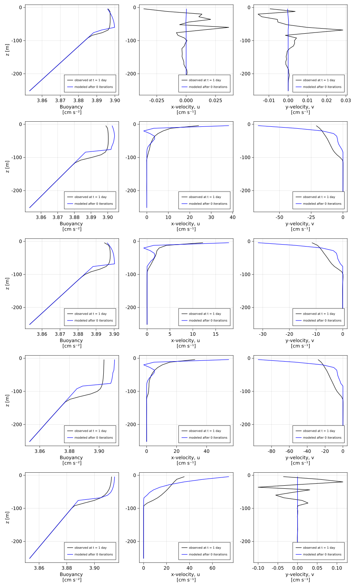
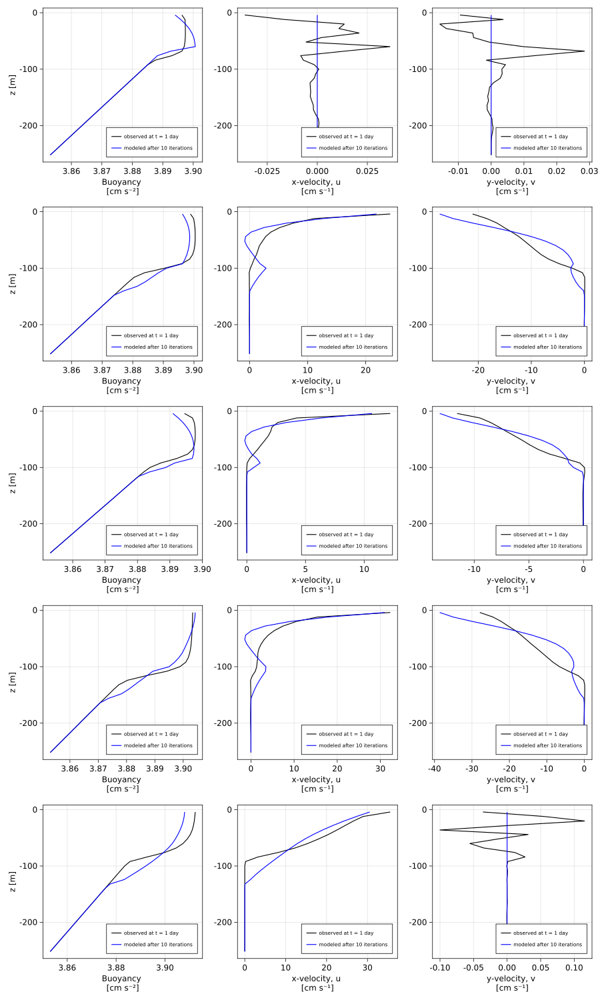
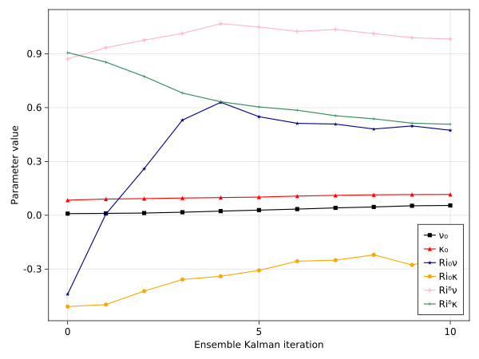

Calibration of RiBasedVerticalDiffusivity to five LESbrary simulations
Install dependencies
using Pkg
pkg"add ParameterEstimocean, Oceananigans, CairoMakie"using Oceananigans
using Oceananigans.Units
using ParameterEstimocean
using LinearAlgebra, CairoMakie, DataDeps, Distributions
using Oceananigans.TurbulenceClosures: RiBasedVerticalDiffusivityUsing LESbrary data
ParameterEstimocean.jl provides paths to synthetic observations derived from high-fidelity large eddy simulations. In this example, we illustrate calibration of a turbulence parameterization to one of these simulations:
cases = ["free_convection",
"strong_wind_weak_cooling",
"weak_wind_strong_cooling",
"strong_wind",
"strong_wind_no_rotation"]
datapaths = [@datadep_str("two_day_suite_1m/$(case)_instantaneous_statistics.jld2") for case in cases]
times = [2hours, 12hours, 24hours]
field_names = (:b, :u, :v)
transformation = ZScore()
regrid = (1, 1, 32)
observations = [SyntheticObservations(path; field_names, times, transformation, regrid)
for path in datapaths]5-element Vector{SyntheticObservations{NamedTuple{(:b, :v, :u), Tuple{Oceananigans.OutputReaders.FieldTimeSeries{Oceananigans.Grids.Center, Oceananigans.Grids.Center, Oceananigans.Grids.Center, Oceananigans.OutputReaders.InMemory, Tuple{Colon, Colon, Colon}, OffsetArrays.OffsetArray{Float64, 4, Array{Float64, 4}}, Oceananigans.Grids.RectilinearGrid{Float64, Oceananigans.Grids.Periodic, Oceananigans.Grids.Periodic, Oceananigans.Grids.Bounded, Float64, Float64, Float64, OffsetArrays.OffsetVector{Float64, StepRangeLen{Float64, Base.TwicePrecision{Float64}, Base.TwicePrecision{Float64}}}, OffsetArrays.OffsetVector{Float64, StepRangeLen{Float64, Base.TwicePrecision{Float64}, Base.TwicePrecision{Float64}}}, OffsetArrays.OffsetVector{Float64, StepRangeLen{Float64, Base.TwicePrecision{Float64}, Base.TwicePrecision{Float64}}}, Oceananigans.Architectures.CPU}, Float64, Oceananigans.BoundaryConditions.FieldBoundaryConditions{Nothing, Nothing, Nothing, Nothing, Oceananigans.BoundaryConditions.BoundaryCondition{Oceananigans.BoundaryConditions.Flux, Nothing}, Oceananigans.BoundaryConditions.BoundaryCondition{Oceananigans.BoundaryConditions.Flux, Nothing}, Oceananigans.BoundaryConditions.BoundaryCondition{Oceananigans.BoundaryConditions.Flux, Nothing}}, Vector{Float64}}, Oceananigans.OutputReaders.FieldTimeSeries{Oceananigans.Grids.Center, Oceananigans.Grids.Face, Oceananigans.Grids.Center, Oceananigans.OutputReaders.InMemory, Tuple{Colon, Colon, Colon}, OffsetArrays.OffsetArray{Float64, 4, Array{Float64, 4}}, Oceananigans.Grids.RectilinearGrid{Float64, Oceananigans.Grids.Periodic, Oceananigans.Grids.Periodic, Oceananigans.Grids.Bounded, Float64, Float64, Float64, OffsetArrays.OffsetVector{Float64, StepRangeLen{Float64, Base.TwicePrecision{Float64}, Base.TwicePrecision{Float64}}}, OffsetArrays.OffsetVector{Float64, StepRangeLen{Float64, Base.TwicePrecision{Float64}, Base.TwicePrecision{Float64}}}, OffsetArrays.OffsetVector{Float64, StepRangeLen{Float64, Base.TwicePrecision{Float64}, Base.TwicePrecision{Float64}}}, Oceananigans.Architectures.CPU}, Float64, Oceananigans.BoundaryConditions.FieldBoundaryConditions{Nothing, Nothing, Nothing, Nothing, Oceananigans.BoundaryConditions.BoundaryCondition{Oceananigans.BoundaryConditions.Flux, Nothing}, Oceananigans.BoundaryConditions.BoundaryCondition{Oceananigans.BoundaryConditions.Flux, Nothing}, Oceananigans.BoundaryConditions.BoundaryCondition{Oceananigans.BoundaryConditions.Flux, Nothing}}, Vector{Float64}}, Oceananigans.OutputReaders.FieldTimeSeries{Oceananigans.Grids.Face, Oceananigans.Grids.Center, Oceananigans.Grids.Center, Oceananigans.OutputReaders.InMemory, Tuple{Colon, Colon, Colon}, OffsetArrays.OffsetArray{Float64, 4, Array{Float64, 4}}, Oceananigans.Grids.RectilinearGrid{Float64, Oceananigans.Grids.Periodic, Oceananigans.Grids.Periodic, Oceananigans.Grids.Bounded, Float64, Float64, Float64, OffsetArrays.OffsetVector{Float64, StepRangeLen{Float64, Base.TwicePrecision{Float64}, Base.TwicePrecision{Float64}}}, OffsetArrays.OffsetVector{Float64, StepRangeLen{Float64, Base.TwicePrecision{Float64}, Base.TwicePrecision{Float64}}}, OffsetArrays.OffsetVector{Float64, StepRangeLen{Float64, Base.TwicePrecision{Float64}, Base.TwicePrecision{Float64}}}, Oceananigans.Architectures.CPU}, Float64, Oceananigans.BoundaryConditions.FieldBoundaryConditions{Nothing, Nothing, Nothing, Nothing, Oceananigans.BoundaryConditions.BoundaryCondition{Oceananigans.BoundaryConditions.Flux, Nothing}, Oceananigans.BoundaryConditions.BoundaryCondition{Oceananigans.BoundaryConditions.Flux, Nothing}, Oceananigans.BoundaryConditions.BoundaryCondition{Oceananigans.BoundaryConditions.Flux, Nothing}}, Vector{Float64}}}}, Tuple{Symbol, Symbol, Symbol}, Oceananigans.Grids.RectilinearGrid{Float64, Oceananigans.Grids.Periodic, Oceananigans.Grids.Periodic, Oceananigans.Grids.Bounded, Float64, Float64, Float64, OffsetArrays.OffsetVector{Float64, StepRangeLen{Float64, Base.TwicePrecision{Float64}, Base.TwicePrecision{Float64}}}, OffsetArrays.OffsetVector{Float64, StepRangeLen{Float64, Base.TwicePrecision{Float64}, Base.TwicePrecision{Float64}}}, OffsetArrays.OffsetVector{Float64, StepRangeLen{Float64, Base.TwicePrecision{Float64}, Base.TwicePrecision{Float64}}}, Oceananigans.Architectures.CPU}, Vector{Float64}, String, NamedTuple{(:parameters, :grid, :coriolis, :buoyancy, :closure), Tuple{NamedTuple{(:LESbrary_jl_commit_SHA1, :name, :thermocline_type, :buoyancy_flux, :momentum_flux, :temperature_flux, :coriolis_parameter, :thermal_expansion_coefficient, :gravitational_acceleration, :boundary_condition_θ_top, :boundary_condition_θ_bottom, :boundary_condition_u_top, :boundary_condition_u_bottom, :surface_layer_depth, :thermocline_width, :N²_surface_layer, :N²_thermocline, :N²_deep, :dθdz_surface_layer, :dθdz_thermocline, :dθdz_deep, :θ_surface, :θ_transition, :θ_deep, :z_transition, :z_deep, :k_transition, :k_deep), Tuple{SubString{String}, String, String, Float64, Float64, Float64, Float64, Float64, Float64, Float64, Float64, Float64, Float64, Float64, Float64, Float64, Float64, Float64, Float64, Float64, Float64, Float64, Float64, Float64, Float64, Float64, Int64, Int64}}, NamedTuple{(:Nx, :Ny, :Nz, :Hx, :Hy, :Hz, :Lx, :Ly, :Lz, :Δxᶠᵃᵃ, :Δxᶜᵃᵃ, :xᶠᵃᵃ, :xᶜᵃᵃ, :Δyᵃᶠᵃ, :Δyᵃᶜᵃ, :yᵃᶠᵃ, :yᵃᶜᵃ, :Δzᵃᵃᶠ, :Δzᵃᵃᶜ, :zᵃᵃᶠ, :zᵃᵃᶜ), Tuple{Int64, Int64, Int64, Int64, Int64, Int64, Float64, Float64, Float64, Float64, Float64, Vector{Float64}, Vector{Float64}, Float64, Float64, Vector{Float64}, Vector{Float64}, Float64, Float64, Vector{Float64}, Vector{Float64}}}, NamedTuple{(:f,), Tuple{Float64}}, NamedTuple{(:model,), Tuple{NamedTuple{(:gravitational_acceleration, :constant_salinity, :equation_of_state), Tuple{Float64, Float64, NamedTuple{(:α, :β), Tuple{Float64, Float64}}}}}}, NamedTuple{(:Cν, :ν, :Cκ, :κ), Tuple{Float64, Float64, NamedTuple{(:T, :c₀, :c₁, :c₂), NTuple{4, Float64}}, NamedTuple{(:T, :c₀, :c₁, :c₂), NTuple{4, Float64}}}}}}, Dict{Symbol, ParameterEstimocean.Transformations.Transformation{TimeIndices{UnitRange{Int64}}, Nothing, ZScore{Float64}}}}}:
SyntheticObservations with fields (:b, :v, :u)
├── times: [2 hrs, 12 hrs, 1 d]
├── grid: 1×1×32 RectilinearGrid{Float64, Oceananigans.Grids.Periodic, Oceananigans.Grids.Periodic, Oceananigans.Grids.Bounded} on Oceananigans.Architectures.CPU with 3×3×3 halo
├── path: "/home/runner/.julia/datadeps/two_day_suite_1m/free_convection_instantaneous_statistics.jld2"
├── metadata: (:parameters, :grid, :coriolis, :buoyancy, :closure)
└── transformation: Dict{Symbol, ParameterEstimocean.Transformations.Transformation{TimeIndices{UnitRange{Int64}}, Nothing, ZScore{Float64}}} with 3 entries
SyntheticObservations with fields (:b, :v, :u)
├── times: [2 hrs, 12 hrs, 1 d]
├── grid: 1×1×32 RectilinearGrid{Float64, Oceananigans.Grids.Periodic, Oceananigans.Grids.Periodic, Oceananigans.Grids.Bounded} on Oceananigans.Architectures.CPU with 3×3×3 halo
├── path: "/home/runner/.julia/datadeps/two_day_suite_1m/strong_wind_weak_cooling_instantaneous_statistics.jld2"
├── metadata: (:parameters, :grid, :coriolis, :buoyancy, :closure)
└── transformation: Dict{Symbol, ParameterEstimocean.Transformations.Transformation{TimeIndices{UnitRange{Int64}}, Nothing, ZScore{Float64}}} with 3 entries
SyntheticObservations with fields (:b, :v, :u)
├── times: [2 hrs, 12 hrs, 1 d]
├── grid: 1×1×32 RectilinearGrid{Float64, Oceananigans.Grids.Periodic, Oceananigans.Grids.Periodic, Oceananigans.Grids.Bounded} on Oceananigans.Architectures.CPU with 3×3×3 halo
├── path: "/home/runner/.julia/datadeps/two_day_suite_1m/weak_wind_strong_cooling_instantaneous_statistics.jld2"
├── metadata: (:parameters, :grid, :coriolis, :buoyancy, :closure)
└── transformation: Dict{Symbol, ParameterEstimocean.Transformations.Transformation{TimeIndices{UnitRange{Int64}}, Nothing, ZScore{Float64}}} with 3 entries
SyntheticObservations with fields (:b, :v, :u)
├── times: [2 hrs, 12 hrs, 1 d]
├── grid: 1×1×32 RectilinearGrid{Float64, Oceananigans.Grids.Periodic, Oceananigans.Grids.Periodic, Oceananigans.Grids.Bounded} on Oceananigans.Architectures.CPU with 3×3×3 halo
├── path: "/home/runner/.julia/datadeps/two_day_suite_1m/strong_wind_instantaneous_statistics.jld2"
├── metadata: (:parameters, :grid, :coriolis, :buoyancy, :closure)
└── transformation: Dict{Symbol, ParameterEstimocean.Transformations.Transformation{TimeIndices{UnitRange{Int64}}, Nothing, ZScore{Float64}}} with 3 entries
SyntheticObservations with fields (:b, :v, :u)
├── times: [2 hrs, 12 hrs, 1 d]
├── grid: 1×1×32 RectilinearGrid{Float64, Oceananigans.Grids.Periodic, Oceananigans.Grids.Periodic, Oceananigans.Grids.Bounded} on Oceananigans.Architectures.CPU with 3×3×3 halo
├── path: "/home/runner/.julia/datadeps/two_day_suite_1m/strong_wind_no_rotation_instantaneous_statistics.jld2"
├── metadata: (:parameters, :grid, :coriolis, :buoyancy, :closure)
└── transformation: Dict{Symbol, ParameterEstimocean.Transformations.Transformation{TimeIndices{UnitRange{Int64}}, Nothing, ZScore{Float64}}} with 3 entriesLet's take a look at the observations. We define a few plotting utilities along the way to use later in the example:
colorcycle = [:black, :red, :darkblue, :orange, :pink1, :seagreen, :magenta2]
markercycle = [:rect, :utriangle, :star5, :circle, :cross, :+, :pentagon]
function make_figure_axes(n=1)
fig = Figure(resolution=(1200, n*400))
axs = []
for i = 1:n
ax_b = Axis(fig[i, 1], xlabel = "Buoyancy \n[cm s⁻²]", ylabel = "z [m]")
ax_u = Axis(fig[i, 2], xlabel = "x-velocity, u \n[cm s⁻¹]")
ax_v = Axis(fig[i, 3], xlabel = "y-velocity, v \n[cm s⁻¹]")
push!(axs, (ax_b, ax_u, ax_v))
end
n == 1 && (axs = first(axs))
return fig, axs
end
function plot_fields!(axs, b, u, v, label, color, grid=first(observations).grid)
z = znodes(Center, grid)
# Note unit conversions below, eg m s⁻² -> cm s⁻²:
lines!(axs[1], 1e2 * b, z; color, label)
lines!(axs[2], 1e2 * u, z; color, label)
lines!(axs[3], 1e2 * v, z; color, label)
return nothing
endplot_fields! (generic function with 2 methods)And then plot the evolution of the observed fields,
fig, axs = make_figure_axes()
for (i, obs) in enumerate(observations)
Nt = length(obs.times)
t = obs.times[end]
fields = map(name -> interior(obs.field_time_serieses[name][Nt], 1, 1, :), field_names)
plot_fields!(axs, fields..., "t = " * prettytime(t), colorcycle[i])
end
[axislegend(ax, position=:rb, merge=true, labelsize=10) for ax in axs]
Calibration
ri_based_closure = RiBasedVerticalDiffusivity()
simulation = ensemble_column_model_simulation(observations;
Nensemble = 60,
architecture = CPU(),
tracers = (:b, :e),
closure = ri_based_closure)Simulation of HydrostaticFreeSurfaceModel{CPU, RectilinearGrid}(time = 0 seconds, iteration = 0)
├── Next time step: 1 second
├── Elapsed wall time: 0 seconds
├── Wall time per iteration: NaN years
├── Stop time: 1 day
├── Stop iteration : Inf
├── Wall time limit: Inf
├── Callbacks: OrderedDict with 4 entries:
│ ├── stop_time_exceeded => Callback of stop_time_exceeded on IterationInterval(1)
│ ├── stop_iteration_exceeded => Callback of stop_iteration_exceeded on IterationInterval(1)
│ ├── wall_time_limit_exceeded => Callback of wall_time_limit_exceeded on IterationInterval(1)
│ └── nan_checker => Callback of NaNChecker for u on IterationInterval(100)
├── Output writers: OrderedDict with no entries
└── Diagnostics: OrderedDict with no entriesThe simulation is initialized with neutral boundary conditions and a default time-step, which we modify for our particular problem:
Qᵘ = simulation.model.velocities.u.boundary_conditions.top.condition
Qᵇ = simulation.model.tracers.b.boundary_conditions.top.condition
N² = simulation.model.tracers.b.boundary_conditions.bottom.condition
simulation.Δt = 20minutes
for (i, obs) in enumerate(observations)
view(Qᵘ, :, i) .= obs.metadata.parameters.momentum_flux
view(Qᵇ, :, i) .= obs.metadata.parameters.buoyancy_flux
view(N², :, i) .= obs.metadata.parameters.N²_deep
endWe identify a subset of the closure parameters to calibrate by specifying parameter names and prior distributions:
priors = (ν₀ = lognormal(mean=0.01, std=0.005),
κ₀ = lognormal(mean=0.1, std=0.05),
Ri₀ν = Normal(-0.5, 1.0),
Ri₀κ = Normal(-0.5, 1.0),
Riᵟν = lognormal(mean=1.0, std=0.5),
Riᵟκ = lognormal(mean=1.0, std=0.5))
free_parameters = FreeParameters(priors)FreeParameters with 6 parameters
├── names: (:ν₀, :κ₀, :Ri₀ν, :Ri₀κ, :Riᵟν, :Riᵟκ)
└── priors: Dict{Symbol, Any}
├── ν₀ => LogNormal{Float64}(μ=-4.716741961645196, σ=0.47238072707743883)
├── κ₀ => LogNormal{Float64}(μ=-2.4141568686511503, σ=0.47238072707743883)
├── Ri₀ν => Normal{Float64}(μ=-0.5, σ=1.0)
├── Ri₀κ => Normal{Float64}(μ=-0.5, σ=1.0)
├── Riᵟν => LogNormal{Float64}(μ=-0.11157177565710488, σ=0.47238072707743883)
└── Riᵟκ => LogNormal{Float64}(μ=-0.11157177565710488, σ=0.47238072707743883)TODO: explain the meaning of each parameter The prior information comes from experience, prior calibration runs, and educated guesses.
calibration = InverseProblem(observations, simulation, free_parameters)InverseProblem{ConcatenatedOutputMap} with free parameters (:ν₀, :κ₀, :Ri₀ν, :Ri₀κ, :Riᵟν, :Riᵟκ)
├── observations: Vector{<:SyntheticObservations} of (:b, :v, :u) on 1×1×32 RectilinearGrid{Float64, Oceananigans.Grids.Periodic, Oceananigans.Grids.Periodic, Oceananigans.Grids.Bounded} on Oceananigans.Architectures.CPU with 3×3×3 halo
├── simulation: Simulation on 60×5×32 RectilinearGrid{Float64, Oceananigans.Grids.Flat, Oceananigans.Grids.Flat, Oceananigans.Grids.Bounded} on Oceananigans.Architectures.CPU with 0×0×3 halo with Δt=1200.0
├── free_parameters: (:ν₀, :κ₀, :Ri₀ν, :Ri₀κ, :Riᵟν, :Riᵟκ)
└── output map: ConcatenatedOutputMapNext, we calibrate, using a relatively large noise to reflect our uncertainty about how close the observations and model can really get,
eki = EnsembleKalmanInversion(calibration; pseudo_stepping=ConstantConvergence(0.8))
iterate!(eki; iterations = 10)
@show eki.iteration_summaries[end]IterationSummary(iteration=10, pseudotime=0.277397, pseudo_Δt=0.0596721) for 60 particles and 6 parameters
ν₀ | κ₀ | Ri₀ν | Ri₀κ | Riᵟν | Riᵟκ |
ensemble_mean: 4.552e-02 | 4.467e-02 | 6.186e-01 | 2.539e-01 | 7.971e-01 | 1.095e+00 |
best particle: 7.713e-02 | 5.263e-02 | -1.170e-01 | 3.389e-01 | 5.247e-01 | 6.934e-01 | error = 3.314086e-01
worst particle: 3.417e-02 | 1.219e-01 | -4.368e-01 | 2.077e-01 | 7.570e-01 | 3.329e-01 | error = 5.179900e-01
minimum: 3.175e-02 | 1.579e-02 | -1.271e+00 | -2.294e+00 | 2.941e-01 | 3.329e-01 |
maximum: 1.043e-01 | 1.334e-01 | 3.084e+00 | 2.573e+00 | 1.981e+00 | 2.980e+00 |
ensemble_variance: 7.287e-04 | 2.098e-03 | 7.850e-01 | 9.329e-01 | 7.382e-05 | 7.596e+03 | Results
To analyze the results, we build a new simulation with just one ensemble member to evaluate some utilities for analyzing the results:
Nt = length(first(observations).times)
Niter = length(eki.iteration_summaries) - 1
modeled_time_serieses = calibration.time_series_collector.field_time_serieses
observed, modeled = [], []
for (c, obs) in enumerate(observations)
push!(observed, map(name -> interior(obs.field_time_serieses[name][Nt], 1, 1, :), field_names))
push!(modeled, map(name -> interior( modeled_time_serieses[name][Nt], 1, c, :), field_names))
end
function compare_model_observations(model_label="modeled")
fig, axs = make_figure_axes(length(observations))
for (c, obs) in enumerate(observations)
plot_fields!(axs[c], observed[c]..., "observed at t = " * prettytime(times[end]), :black)
plot_fields!(axs[c], modeled[c]..., model_label, :blue)
[axislegend(ax, position=:rb, merge=true, labelsize=10) for ax in axs[c]]
end
return fig
endcompare_model_observations (generic function with 2 methods)Now we execute forward runs for the initial ensemble mean,
initial_parameters = eki.iteration_summaries[0].ensemble_mean
forward_run!(calibration, initial_parameters)
fig = compare_model_observations("modeled after 0 iterations")[ Info: Initializing simulation...
[ Info: ... simulation initialization complete (961.093 μs)
[ Info: Executing initial time step...
[ Info: ... initial time step complete (3.773 ms).
[ Info: Simulation is stopping. Model time 1 day has hit or exceeded simulation stop time 1 day.
and the final ensemble mean, representing our "best" parameter set,
best_parameters = eki.iteration_summaries[end].ensemble_mean
forward_run!(calibration, best_parameters)
fig = compare_model_observations("modeled after $Niter iterations")[ Info: Initializing simulation...
[ Info: ... simulation initialization complete (888.394 μs)
[ Info: Executing initial time step...
[ Info: ... initial time step complete (3.537 ms).
[ Info: Simulation is stopping. Model time 1 day has hit or exceeded simulation stop time 1 day.
Parameter evolution
To understand how results changed over the EKI iterations, we look at the evolution of the ensemble means,
ensemble_means = NamedTuple(n => map(summary -> summary.ensemble_mean[n], eki.iteration_summaries)
for n in calibration.free_parameters.names)
fig = Figure()
ax = Axis(fig[1, 1], xlabel = "Ensemble Kalman iteration", ylabel = "Parameter value")
for (i, name) in enumerate(calibration.free_parameters.names)
label = string(name)
marker = markercycle[i]
color = colorcycle[i]
scatterlines!(ax, 0:Niter, parent(ensemble_means[name]); marker, color, label)
end
axislegend(ax, position=:rb)
This page was generated using Literate.jl.